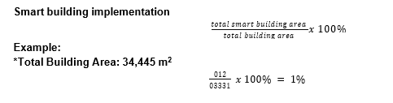

| No. | Name | Place | Building | Safety | Energy | Water | Indoor Environment | Lighting | Building Area (m²) | ||||||||||||
|---|---|---|---|---|---|---|---|---|---|---|---|---|---|---|---|---|---|---|---|---|---|
| B 1 | B 2 | S 1 | S 2 | S 3 | S 4 | E 1 | E 2 | W 1 | W 2 | I 1 | I 2 | I 3 | I 4 | L 1 | L 2 | L 3 | L 4 | ||||
| 1 | IT Department | Resorts Building | 350 | ||||||||||||||||||

Smart building implementation measures the proportion of a university’s total building area that incorporates advanced technologies such as automated lighting, energy-efficient systems, digital controls, and integrated monitoring. This metric serves as an indicator of the institution’s progress toward sustainable, technology-driven infrastructure and its commitment to enhancing operational efficiency while reducing environmental impact.
Currently, 1% of Urdaneta City University’s total building area is classified as a smart building. While this represents an initial step in the university’s adoption of smart infrastructure, it demonstrates a clear commitment to integrating technology with sustainability goals. Moving forward, these efforts provide a foundation for expanding smart systems across more facilities, optimizing energy use, improving building management, and creating a more sustainable and resilient campus environment.